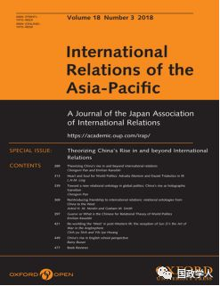
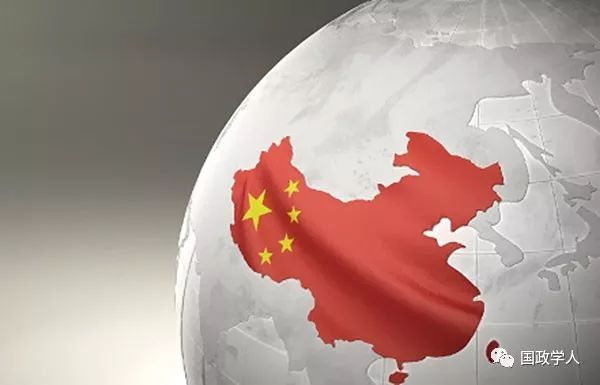

收录于合集 #理论研究 96个

简 介
【作者】 埃米利安·卡瓦尔斯基（Emilian Kavalski）现为澳大利亚天主教大学社会公正研究所全球研究副教授。埃米利安的研究主要集中在后殖民文学、欧洲政治、国际理论、亚洲事务和后人文学科等方面。他目前正在从事(一)人类世中国际关系与生命的接触，特别是非人类行为者的概念化和参与;(二)新生的亚洲规范秩序，以及它们面对、赞扬和改造既定传统、规范和制度的方式。 埃米利安认为，在这两个领域中，关系的概念和实践对于处理、解释和理解全球生活的方式都具有重要意义。 同时他也是劳特利奇《反思亚洲与国际关系》丛书的编辑。
【编译】 刘孝玉
【校对】 李雯珲 彭小朵
【审核】 丁伟航
【来源】 International Relations of the Asia-Pacific, Volume 18, Issue 3, September 2018, Pages 397–420. (doi: 10.1093/irap/lcy008)
【期刊】 《亚太国际关系》（International Relations of the Asia- Pacific）是发表亚太地区国际关系研究的重要国际关系类期刊。该期刊于2001年推出，每年1月、5月和9月发行三次。该期刊关注的重点是：亚太地区的国家间关系、亚太地区与世界其他地区的关系、涉及亚太一国或多国的国际关系的一般问题和理论。

“ 关系” ： 世界政治关系理论的中国话语
Guanxi or What is the Chinese for Relational Theory of World Politics
Emilian Kavalski
内容提要
中国崛起这一现象已经促使一些人寻求“中国特色”的国际关系理论，其中很多研究同“关系转向”（relational turn）相关。然而将西方话语（Anglophone）和中国话语（Sinophone）进行关系转向的尝试并未超越元叙述的主流分支。为纠正这一趋势，本文作者对“关系”（特指中国话语：guanxi）、关系转向和中国国际关系方面的文献进行了研究，提出了一个“后西方国际关系（post- Western IR）中知识生产（knowledge production）内在关系理论”的规范性主张。 **作者的论点包括两点：第一，认为西方文献在关系转向上对本体论的批判未能克服其欧洲中心主义；第二，通过认同西方与非西方认知的二元性，中文文献已经放弃了 “关系”这一政治承诺。**本文通过对“关系”概念进行研究，详细说明了全球生活（global life）和国际关系领域中固有的关系。

文章导读
**1
** ****导 言
“中国如何思考，以及中国的历史与传统以何种方式塑造其国际视野的独特性”已经成为国际关系领域甚至整个人文和社会科学领域讨论的话题。西方知识分子想象中的中国作为“绝对他者”（the ultimate other）的地位是探讨的核心。 作为 “绝对他者”，汉语概念在国际关系语篇中的传播不仅对国际关系学科的根本结构 （ constitutional structures） 提出质疑，而且呼吁国际关系理论采纳一个极少用的研究方法，即从关系的多元性着手去面对活跃全球生活的多元关系。
通过回顾“theory”（理论）一词的词源，作者发现，理论化（theorizing）是一个进行大量语言翻译的相关过程，但这一知识生产的过程掩盖了对“他者”的开放，在此之中形成了一个持续存在的错位，即“他者”形式的理论建构只有在符合西方话语的习惯之时才会被承认。所以，尽管西方国际关系理论的知识建构自我宣称是具有全球意义的，但实际上它并没有这样的文化支撑，因为“他者”并不能与之平等对话。
文章表明，国际关系理论应该学习和借鉴不同的语言，以便为它所寻求理解的复杂而异质性的全球生活提供一个更丰富、更精妙的描述。 引用肯尼思·华尔兹的话说，国际关系理论传达的是事物之间难以观察的关系，它们是关于联系和原因的，通过这些联系和原因，事物能够被观察。华尔兹确信，意义建构在“观察者”与“被观察者”的层面上发生。 作者认为，国际关系中存在分离主体与客体、知者与被知者、自我与他者、思想与物质的主张以及与之相关的控制与利用行为，正是创造性而不是既定的解决方案改变了这一行为。 为了维持一个全面的观点，西方话语中的国际关系不能再忽视与“他者”及“他者”所建构的知识的接触。
因此，文章致力于对中国话语中的概念及其对国际定义进行解释性的理论探索，以探讨这些概念和定义是否真的离题到不值得认可为国际关系理论。 文章首先指出对“关系”的关注并不完全是巧合。它是构成国际关系的中文术语——“国际关系”（“ guoji guanxi ”）。 **文章共分为三个部分，第一部分梳理 “关系”的内容和实践，以及它对国际关系理论与实践的意义；第二部分指出了“关系”概念对国际关系中关系理论的新兴模式的一些影响；第三部分则探讨了文章主题中的规范性问题。**结论部分通过阐述“关系”如何帮助超越在关系和国际关系大部分文献中占据主导地位的期望以及西方——非西方的分歧，唤醒世界相互接触的记忆。
**2
**
“关系”及其含义
（Guanxi：what’sin a name?）
文章强调其所指的“关系”不仅是解释中国外交的工具，也是国际关系中关系知识生产和实践的关键。通常，“关系”被定义为“建立和维护错综复杂而又无处不在的关系网络，这种关系网络产生于成员间无限利益交换的实践，并受到彼此义务、保证和相互关系的约束”。 “ 关系”互动最重要的特征是，它提供了一种友好的感觉，使社会进程个性化，让这一进程充满“给予、接受、回报”的责任感，并确保所有人参与“关系游戏”。
文章指出儒家思想是中国“关系”概念的基础，它为偶然性的创新提供了一个有利的平台。儒家对“关系”的核心影响是它的义务论承诺，即按照社会需求和期望行事。这一承诺不是一种束缚，而是反映出“关系”中成员对关系的依赖和维持。在儒家思想影响下，尽管“关系”是不对等的，但是它们是有意志的，等级制度的结构不能被认为是一方对另一方施加影响。相反，“关系”中的互惠义务掩盖了它对双方的制约作用。 事实上， “关系”中存在着权力悖论，即弱者反而对强者形成了权力优势，而强者则受到了对声誉追求的限制。
作者指出， **“ 关系”网络中互惠义务的一个核心特征是：它是一个动态的过程，而非静态的结构。“关系”中的参与者扮演着不同的角色，在交流互动过程中各自角色不断发生变化。**角色不是身份(或由他们指定的)，而是在世界舞台上互动行为，一个行为体可以根据情况扮演任何角色。行为体的角色外生于他们的互动关系中，并且随着时空发生变化。 对角色的需求既不是在抽象中产生也不是预先给定，而是在互动的过程中产生和获得意义。 根据社会环境，“关系”中的行为体可以同时兼具和善、慷慨（中国在东欧或非洲的角色）以及独断专行和睚眦必报（中国在南中国海的角色）。以角色为中心的框架不仅支撑着“关系”的延展性(即，它可以用于多种多样的目的)，而且在认识和影响紧急机遇的背景下，它有可能产生有弹性的联系。 由于关系角色动态存在， “关系”中全球生活的一个永久性特征就是变化。
**3
**
“关系”和国际关系中的关系转向
作者认为，将“关系”概念应用其中可以为国际关系的关系理论提供了一个观察透镜；通过这个透镜，“他者”得到承认，意义也从互动实践中产生，声誉和维持行动的承诺则成为行为体之间关系的前提条件。这部分作者要探讨的是“关系”概念是如何塑造关系理论的。
因此， 作者首先讨论了关系转向，并指出杰克森（ Jackson ）和尼克森（ Nexon **）在这其中做出了重大的贡献。他们认为，理论建构中存在 “本体论”和“关系”两种基础。**但是，西方话语中的国际关系理论的理论构建基础大多属于前者，宣称国家是任何理论的前提。这种观点导致了一种观念，即国际政治几乎就是默认的无政府主义和国家间的相互敌对。
**作者又注意到了中国国际关系界（以秦亚青为主要代表）对西方国际关系主流理论的批评 ——主要是批评它持续缺乏且无力培养关系理论。**秦亚青认为杰克森和尼克森的关系研究同本体论一样，也未能克服欧洲中心主义的叙事。作者赞同秦亚青关于欧洲中心主义的批评，但同时认为，秦亚青的关系理论也并不完善。
**作者认为， “关系”是一种倾向和一种共存的能力。在全球生活变化模式中，“关系”提供了一个与“基于规则”相反的有意义的关系框架。这样，传递到国际事务中的不是“将抽象规则具体应用”，而是“一系列特殊的国际关系，每一种关系都包含有具体的义务”。**这种理解将权力从物质能力转移到了“关系的实践”上，这成为“关系逻辑”的核心。其底线是如果关系继续的话，双方都会更好。正常的关系并不要求伙伴之间的对等或平等交易，它要求的是互惠。这种方法构成的关系涉及的是关心、专注、谦逊以及对其他人的责任。
作者指出，关系框架是管理超社会 （ hyper-social） 环境的一种有效战略。 关系逻辑勾勒出一个行为体参与世界事务的社会环境。在这个社会环境中，行为体可以通过积极的、坚定的、负责的行动来实现它的目标。这一模式就要求对环境保持敏感性，也要求参与互动的各方承诺在关系中采取深思熟虑的行动。
**作者认为 “关系”动态观的主要特征是强调和谐。**就像无政府状态的隐喻支持一种优先考虑物质能力的自助国际体系一样，对于和谐的叙述勾勒出了一个以互惠关系为前提的秩序模式。这一模式在不断展示对他人的尊重的背景下，为致力于培养互联互通付出了极高的成本。这里的关键点是，“关系”中的关系是意志性的——行为体通过展示他们自我控制的意愿，来表达他们有意于互动。这种“关系”的动力不应被理解为利他主义，相反，它们具有明显的战略意义。例如，中国的全球扩张可以被解读为一个先发制人的互动政策，目的是缓和其他国际行为体的担忧，并“通过维持与相关伙伴的积极关系来降低未来的损失”。
在这样的关系设定下，机构（尤其是国际机构）不是个体利益的有意投射，而是与战略接受力相关——在与别人的关系中了解自己与他人。这种情境协调不仅没有妨碍政策过程，反而揭示了“关系”模式可能带来预料之外的机遇。比如，上海五国机制通过发展成为上海合作组织而出人意料的演变成为“一带一路”倡议就是这方面的明证。
作者由此得出的结论是，国际机构产生于互动，而非于真空中产生。 关系的生命力似乎是一种采取集体行动的承诺，它能为国际交流中的解释性表达和再表达提供持续不断的机会。这种国际交流可以产生、增强和重新肯定参与其中的行为体的声誉。这也可以解释为何中国普遍反对对其合作伙伴强加条件。它强调的是追求因维持关系而带来的战略价值，而不是眼前利益。
因此，作为社会知识和社会生活的中心，“关系”暗示共同的理解不是由规则、权利、义务强加的，而是在互动中产生，在互动中发展并贯穿互动始终。因此，“关系”预示了一种对国际行为和机构的理解，这种理解既是认知性的，又是情感性的，同时也受到对他者的道德义务和承诺的塑造和调节。与此同时，互动实践所提供的环境重新说明了机构受到互动中其他参与者所提要求的驱使。这要求具备在无控制的社会环境中的生存技巧。这一关系不是零和的，因为零和会终结“关系”。其中重要的不是个人决定，而是互动过程中的关系，以及这种关系在集体行动的社会情境中变得有意义。
这种关系中的“互惠”不是合法性，而是声誉，声誉是一种社会资源。因此，“关系”的应用“主要为了获得和扩大社会资源”。“关系”的战略目标是增强行为体的声誉。在儒家所理解的和谐概念下，如果在“关系”实践建构的世界关系秩序中失去其他行为体的信任，将是极度危险的。因此，中国坚持尊重他人可以被理解为一种战略期望，即期望他在国际舞台中的声誉可以得到认可。
**4
**
结论：后西方国际关系理论中的关系理论
作者认为， **“ 关系”概念不是对暗含着自我-他者、中心-边缘、霸权国- 挑战者等支撑着国际关系二元叙事的模型的静态和空间安排，——而是阐明全球生活的复杂模式同全球互动的脆弱性、流动性和关系互动产生了共鸣。**这与当前国际关系中关系理论的研究现状有很大的不同，与“关系”概念的邂逅不是关注二元关系以及个体行为者的身份和能力，而是包含一个国际关系的转向，即转向一种以形象（figurations）为中心的交织在一起的网络。正如社会学家费孝通指出的那样，知识生产的关系模式依赖于对他人经验的接触和学习。所以，行为体（及其机构）只有在与他者有关系的情况下才有影响。因此，由于这些互动的动态本质，所谓的世界秩序不仅在不断变化，还要求继续致力于参与和维持关系。
**“ 关系”启发我们，除非将其放在互动环境中进行评估，否则物质能力的变化本身并不能很好地揭示世界事务的模式。**中国崛起的故事借鉴了权力转移的叙事，以霸权国- 挑战国的二元对立为出发点——前者不愿意放弃领导地位，而后者随着不断增强的实力和野心也要求得到这一地位（如果有必要，甚至会使用武力）。这种国际关系叙事将一般的恐惧转化为具体的威胁，进而为结盟政策提供支持，或为军事征服提供机会。而关系理论所提供的叙事逻辑则将中国的崛起视为一个社会性的谈判实践，其中权力转移最多只占一部分内容。通过“关系”的视角，中国崛起不同之处在于它能被解读为 “ 对抗中的相互依赖”。 这是一种规范性立场，它把合作和竞争都视为维持国际生活中所有行为体之间相互依赖的力量。
就“关系”的认知性差异而言，非二元化的关系已经成为后西方国际关系理论建构和知识生产的一个显著特征。今天似乎无人质疑西方国际关系理论学科探究中的欧洲中心主义打上“殖民主义”标志的行为。不仅如此，在那些观点依然较为封闭的非西方国际关系理论看来，国际关系学科在冷战中转变为“美国社会科学”使得它显得更具敌意。为了解决看起来依然困扰着以“后”或“非”开头的国际关系理论的时间和空间差异的双重问题，文章以关系为中心作为所有此类理论的一个显著特征。 在这一设定下 ,关系视角帮助我们勾勒出后西方国际关系理论的争议地带，作为一个对话学习的空间，它鼓励人们参与到多个世界的互动所带来的可能性中去。
这种理论模式允许在共通的项目之间建立团结（solidarity），通过将主流理论中的沉默、霸权、父权制和暴力视为一阶问题的二等方面，指出国际关系理论中尖锐的本体论和缺乏关系的认识论。正是对关系（一等问题）的否认使得帝国主义、宗法主义和种族主义这些二等问题能在国际关系中长期延续。这意味着国际关系主流已经被对全球生活的原子论式理解所主导，这种理解优先考虑固定的分析单元(民族国家)及其相对独立的二元互动(无政府状态下的冲突/平衡)。
作者认为，关系理论并未将西方和非西方视作相互独立、互不相关和相互排斥，而是认为两者相互交织，构成相互作用的网络。因此，关系理论具有非二元性。 关系理论提供了一种分子式的观点，即其分析单位是关系（而非行为体）和它们之间形成的多重三元动力。后西方国际关系之所以被称为“后西方国际关系”，是因为它们对于关系的强调，即全球生活中的事务不仅仅是相互联系的，而且它们还从与他者的复杂关系网络中获得意义。正是在这种背景下，研究假定后西方国际关系就像它打算解释和理解全球生活的日常模式和实践一样，必然是情境性的、不连贯的、社会中介的。因此， 对关系的强调提醒我们，国际关系知识与任何知识一样，都是通过不同的实践、在关系中获得并协调的。
作者指出，关系不仅是解释和理解这个世界的核心，而且也处在观察和接触这个世界的中心。关系理论的认知（和道德）范围是对自组织，转化，历史和地理上偶然的全球生活现实的注意力的培养。这种专注毫无疑问会引起国际关系研究的混乱。然而，如果国际关系学科想要恢复对当代潮流、趋势和声音的接触与参与，则需要这种混乱。因此，对“关系”概念的接触与实践引发了关系理论揭示世界的复杂性。毕竟，作为一门学科的国际关系如果不是有意识地探索和接触它和关系之间存在的空隙，又会是什么呢？中国的崛起——作为一种现象、一种叙事和一个过程——提醒我们，全球生活并不必然的仅是国际行为体发现自身的场所，而且也是国际行为体在互动关系的复杂性中迷失的地方。
_ ** _ 本文由国政学人微信平台独家编译首发**
更多阅读
【重磅速递】约瑟夫·奈：美国霸权的兴衰：从威尔逊到特朗普 | 国政学人
【重磅推荐】巴里·布赞：英国学派视角下的中国崛起 | 国政学人
【重磅速递】米尔斯海默：注定失败：自由主义国际秩序的兴衰 | 国政学人